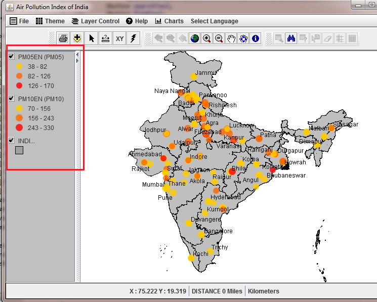

Table of Contents [ TOC ]
The TOC or table of contents, is to the left of the map.

- Each entry is called a 'legend' and represents a map 'layer'
or 'theme'
- If you click on a legend, that layer is called the active
layer, or selected layer
- Its display (rendering) properties can be controlled using
the Legend Editor, and the
legends can be reordered using
Layer Control